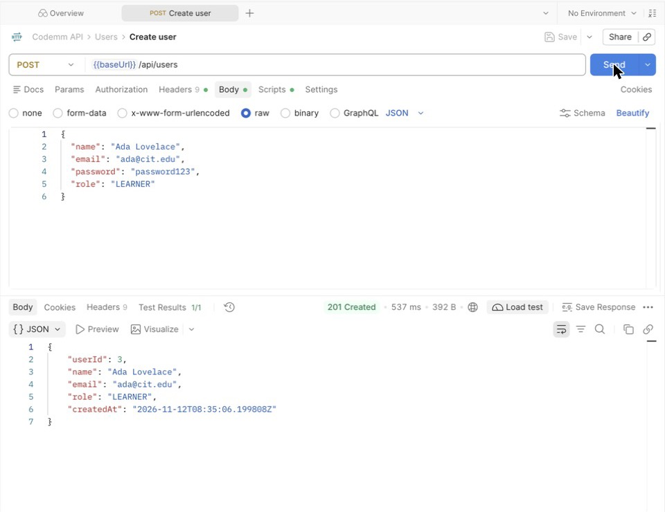
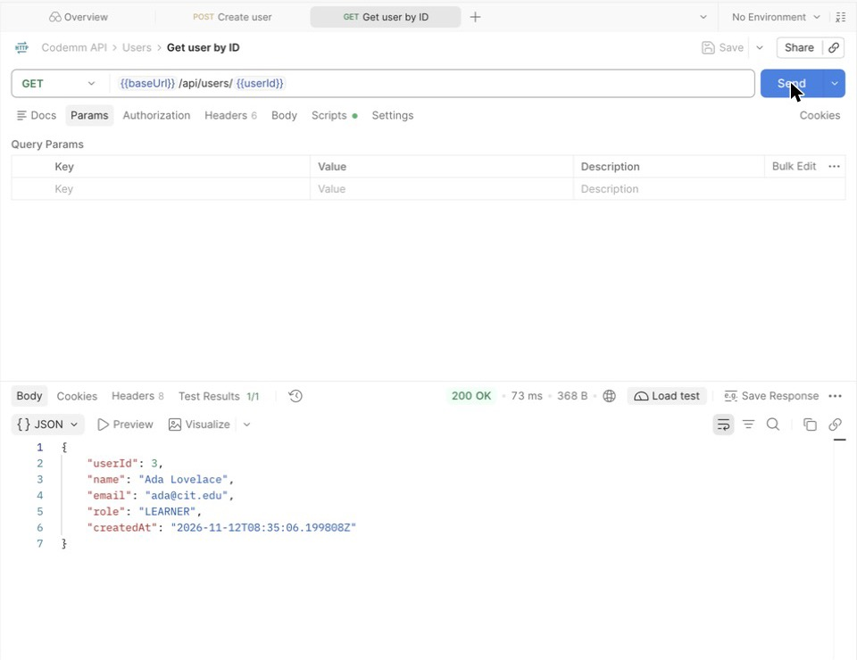
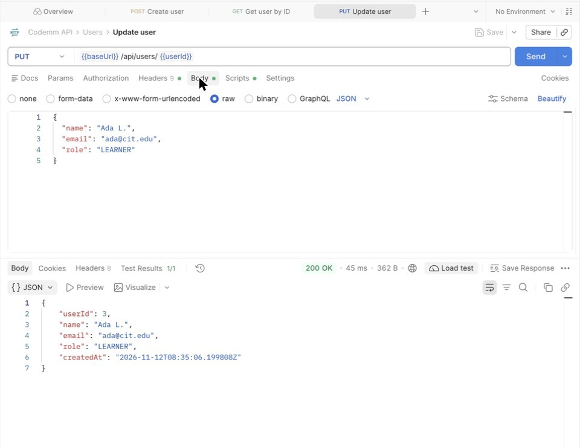
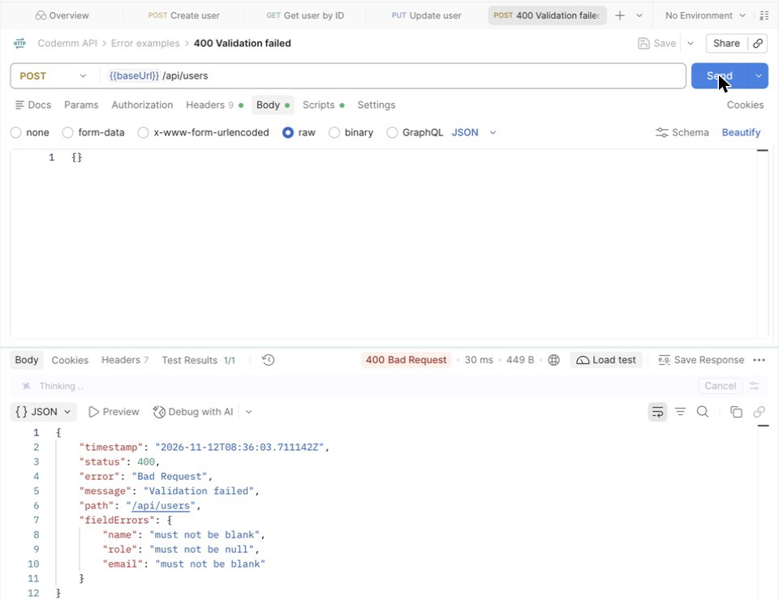

Structure, data model and API testing · Software Increment 1
System architecture
Codemm-web has two parts that talk only through JSON over HTTP. The Next.js front end and Postman are both clients of the same Spring Boot REST API, which stores data in MySQL through Spring Data JPA.
flowchart LR
B["Browser"] --> FE["Next.js front end<br/>localhost:3000"]
FE -->|"JSON over HTTP"| BE["Spring Boot REST API<br/>localhost:8080<br/><br/>Controller → Service → Repository"]
PM["Postman"] -->|"JSON over HTTP"| BE
BE -->|"Spring Data JPA"| DB[("MySQL<br/>dbcodemm")]
Part
Technology
Location
Front end
Next.js 15, React 19, JavaScript
frontend/ · port 3000
Back end
Spring Boot 3.5, Java 17, Spring Web, Spring Data JPA, Validation
backend/ · port 8080
Database
MySQL (XAMPP), H2 in memory for automated tests
dbcodemm, tables tbl*
Build
Maven wrapper (./mvnw)
group com.csit321g1.nightingailles, artifact codemm
Back-end structure
The code is packaged by feature, then by layer. Every feature has the same five sub-packages, so each of the ten entities is built the same way.
Maps /api/<plural> routes, validates the body with @Valid, returns DTOs and status codes
Call a repository or hold business rules
DTO
XxxRequest and XxxResponse Java records; foreign keys are plain IDs
Expose entities or password hashes
Service
Business rules, foreign-key lookups, duplicate checks, transactions
Know about HTTP
Repository
Database access through JpaRepository and derived queries
Hold rules
Entity
Maps one table; @PrePersist sets timestamps
Leave the server
Request lifecycle
Example: creating a goal. The same flow applies to every POST and PUT.
sequenceDiagram
autonumber
participant P as Postman / Next.js
participant C as GoalController
participant S as GoalService
participant R as Repositories
participant D as MySQL
P->>C: POST /api/goals {userId, trackId, ...}
C->>C: @Valid GoalRequest (400 if invalid)
C->>S: create(request)
S->>R: userRepository.findById, trackRepository.findById
R->>D: SELECT
alt user or track missing
S-->>P: ResourceNotFoundException → 404 ApiError
end
S->>R: goalRepository.save(goal)
R->>D: INSERT INTO tblgoal (@PrePersist sets createdAt)
S-->>C: GoalResponse.from(goal)
C-->>P: 201 Created + Location /api/goals/{id}
Error responses
GlobalExceptionHandler turns every exception into the same ApiError JSON body.
Cause
Status
Failed @Valid check (body includes fieldErrors)
400 Bad Request
Unreadable JSON or invalid argument
400 Bad Request
ResourceNotFoundException (missing ID or foreign key)
404 Not Found
ConflictException (duplicate email or track title), database constraint
409 Conflict
{ "timestamp": "2026-11-12T08:36:03Z", "status": 404, "error": "Not Found",
"message": "Goal 9999 was not found", "path": "/api/goals/9999", "fieldErrors": null }
Design rules
Constructor injection only; dependencies are private final.
Class-level @Transactional on services; read methods use readOnly = true.
Passwords are hashed with BCrypt and never returned by the API.
Child foreign keys use ON DELETE CASCADE: deleting a parent removes its children.
attemptNo is assigned by the server as the learner's highest attempt number on that activity plus one.
CORS allows only the front-end origin (http://localhost:3000).
MockMvc tests run the full CRUD flow against H2: ./mvnw test.
Data model
The ten core entities from the ERD, one table each. Each line joins one parent row to many child rows.
erDiagram
tbluser ||--o{ tblgoal : sets
tbltrack ||--o{ tblgoal : "is target of"
tbltrack ||--o{ tbllesson : contains
tblgoal ||--o{ tblroadmap : has
tblroadmap ||--o{ tblroadmapitem : lists
tbllesson ||--o{ tblroadmapitem : "appears in"
tbllesson ||--o{ tblactivity : has
tblactivity ||--o{ tbltestcase : "graded by"
tbluser ||--o{ tblattempt : submits
tblactivity ||--o{ tblattempt : receives
tblattempt ||--o{ tbltestresult : produces
tbltestcase ||--o{ tbltestresult : "checked in"
tbluser { bigint user_id PK
varchar email UK
varchar password_hash
varchar role }
tbltrack { bigint track_id PK
varchar title UK
varchar language }
tbllesson { bigint lesson_id PK
bigint track_id FK
int position }
tblgoal { bigint goal_id PK
bigint user_id FK
bigint track_id FK
varchar depth }
tblroadmap { bigint roadmap_id PK
bigint goal_id FK
varchar status }
tblroadmapitem { bigint item_id PK
bigint roadmap_id FK
bigint lesson_id FK
varchar status }
tblactivity { bigint activity_id PK
bigint lesson_id FK
varchar difficulty
varchar status }
tbltestcase { bigint test_id PK
bigint activity_id FK
bit is_hidden }
tblattempt { bigint attempt_id PK
bigint user_id FK
bigint activity_id FK
int attempt_no
int score }
tbltestresult { bigint result_id PK
bigint attempt_id FK
bigint test_id FK
bit passed }
Endpoints
Base URL http://localhost:8080. Every resource has the same five endpoints.
Method
Path
Success
Errors
GET
/api/<resource>
200, array
–
GET
/api/<resource>/{id}
200, object
404
POST
/api/<resource>
201, object, Location header
400, 404, 409
PUT
/api/<resource>/{id}
200, object
400, 404, 409
DELETE
/api/<resource>/{id}
204, no body
404
Resource
Filter
Request body (POST, PUT)
Response adds
/api/users
–
name, email, password (min 8; optional on PUT), role
lessonId, statement, starterCode, referenceSolution, difficulty, status
activityId
/api/test-cases
?activityId=
activityId, input, expectedOutput, hidden
testId
/api/attempts
?activityId=
userId, activityId, code, score (0–100)
attemptId, attemptNo, submittedAt
/api/test-results
?attemptId=
attemptId, testId, passed, actualOutput
resultId
Testing with Postman
Setup
Start MySQL (XAMPP) on port 3306. The dbcodemm database is created on first run.
Start the back end: cd backend, then ./mvnw spring-boot:run.
In Postman, choose Import and select docs/postman/Codemm.postman_collection.json.
Send the requests folder by folder, top to bottom. Each Create request saves the new ID in a collection variable (for example {{userId}}) that later requests use.
To run everything at once, open the collection and choose Run. The last folder deletes the test data, so the run can be repeated.
Every request has a test that checks the status code; the Test Results tab shows pass or fail.
Examples

POST /api/users returns 201 Created and the new userId.

GET /api/users/{{userId}} returns the saved user without the password.

PUT /api/users/{{userId}} returns 200 OK with the updated name.

POST with an empty body returns 400 and the failing fields.
Test steps per endpoint
Run the resources in this order, because each one needs the IDs created before it. Delete in reverse order (test results first, users last), or delete a parent to remove its children.